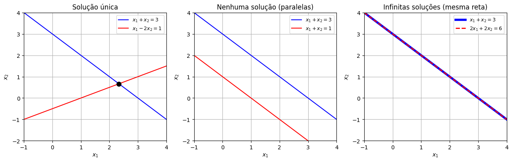

Sistemas de Equações Lineares#
Nesta aula, as equações são algébricas (sem derivadas): queremos achar números \(x_1,x_2,\dots\) que satisfaçam várias equações lineares ao mesmo tempo. Isso vai aparecer em dois momentos ao resolver sistemas de EDOs: para achar autovetores e para ajustar condições iniciais.
Duas retas no plano#
Uma equação linear em duas incógnitas, como \(x_1+x_2=3\), descreve uma reta no plano \(x_1x_2\). Resolver um sistema de duas equações é encontrar os pontos que estão nas duas retas ao mesmo tempo. Só há três possibilidades:
import numpy as np
import matplotlib.pyplot as plt
import sympy as sp
x1 = np.linspace(-1, 4, 100)
fig, axs = plt.subplots(1, 3, figsize=(13, 4.2))
axs[0].plot(x1, 3 - x1, 'b', label='$x_1+x_2=3$')
axs[0].plot(x1, (x1 - 1)/2, 'r', label='$x_1-2x_2=1$')
axs[0].plot(7/3, 2/3, 'ko', markersize=8)
axs[0].set_title("Solução única")
axs[1].plot(x1, 3 - x1, 'b', label='$x_1+x_2=3$')
axs[1].plot(x1, 1 - x1, 'r', label='$x_1+x_2=1$')
axs[1].set_title("Nenhuma solução (paralelas)")
axs[2].plot(x1, 3 - x1, 'b', linewidth=4, label='$x_1+x_2=3$')
axs[2].plot(x1, 3 - x1, 'r--', linewidth=2, label='$2x_1+2x_2=6$')
axs[2].set_title("Infinitas soluções (mesma reta)")
for ax in axs:
ax.set_xlabel("$x_1$"); ax.set_ylabel("$x_2$")
ax.set_xlim(-1, 4); ax.set_ylim(-2, 4)
ax.legend(loc='upper right', fontsize=9); ax.grid(True)
plt.tight_layout()
plt.show()

Solução única: as retas se cruzam num ponto. Em \(x_1+x_2=3,\ x_1-2x_2=1\), subtraindo as equações, \(3x_2=2\), então \(x_2=\tfrac23\) e \(x_1=\tfrac73\).
Nenhuma solução: retas paralelas, como \(x_1+x_2=3\) e \(x_1+x_2=1\) — as equações são contraditórias.
Infinitas soluções: as duas equações descrevem a mesma reta, como \(x_1+x_2=3\) e \(2x_1+2x_2=6\) — a segunda é só o dobro da primeira, e não traz informação nova.
Com três incógnitas a figura é a mesma ideia com planos no espaço, e as mesmas três possibilidades aparecem.
Forma matricial e a inversa#
Em forma matricial, um sistema de \(n\) equações e \(n\) incógnitas é \(A\mathbf{x}=\mathbf{b}\). Os três casos acima são:
Repare: só no caso de solução única o determinante é diferente de zero. Isso vale em geral:
Se \(\det A\neq0\), o sistema \(A\mathbf{x}=\mathbf{b}\) tem uma única solução, \(\mathbf{x}=A^{-1}\mathbf{b}\), para qualquer \(\mathbf{b}\).
Se \(\det A=0\), dependendo de \(\mathbf{b}\), o sistema não tem solução ou tem infinitas soluções.
Geometricamente, \(\det A=0\) significa que as retas (ou planos) têm a mesma inclinação: são paralelas ou coincidentes. Por exemplo, no primeiro sistema,
Sistemas homogêneos#
Um sistema com \(\mathbf{b}=\mathbf{0}\), ou seja, \(A\mathbf{x}=\mathbf{0}\), é chamado homogêneo. Ele sempre tem pelo menos uma solução: a trivial, \(\mathbf{x}=\mathbf{0}\). A pergunta é se existem outras. Pela regra acima:
Se \(\det A\neq0\), a única solução de \(A\mathbf{x}=\mathbf{0}\) é a trivial \(\mathbf{x}=\mathbf{0}\).
Se \(\det A=0\), existem infinitas soluções não nulas.
Esse segundo caso é exatamente o que vai acontecer quando procurarmos autovetores, então vale a pena ver com calma.
Exemplo. Resolva
Aqui \(\det\begin{pmatrix} 1 & -2\\ -3 & 6\end{pmatrix} = 6-6=0\). De fato, a segunda equação é \(-3\) vezes a primeira: na verdade só temos uma equação, \(x_1=2x_2\). Uma das incógnitas fica livre: escolhendo \(x_2=c\) (qualquer número), temos \(x_1=2c\), e todas as soluções são
São todos os múltiplos de um mesmo vetor: uma reta passando pela origem. Dizemos que a solução tem um grau de liberdade (uma constante livre).
Num sistema \(3\times3\) singular podem sobrar um ou dois graus de liberdade. Por exemplo, em
as três equações são a mesma. Escolhendo \(x_1=c_1\) e \(x_2=c_2\) livres, \(x_3=-c_1-c_2\):
Dois graus de liberdade: as soluções formam um plano pela origem.
Matriz aumentada e escalonamento#
Quando o sistema é maior, o método sistemático é o de eliminação de Gauss (escalonamento). Escrevemos a matriz aumentada \((A\,|\,\mathbf{b})\) e usamos as mesmas operações elementares sobre as linhas da aula passada (trocar linhas, multiplicar uma linha por um número não nulo, somar a uma linha um múltiplo de outra) até obter uma matriz triangular superior (zeros abaixo da diagonal). Cada operação corresponde a uma manipulação legítima das equações, então o sistema não muda de solução.
Exemplo 1 (solução única). Resolva
Agora resolvemos de baixo para cima (substituição regressiva): da última linha, \(-4x_3=-4\), então \(x_3=1\); da segunda, \(-x_2+x_3=2\), então \(x_2=-1\); da primeira, \(x_1=7+2x_2-3x_3=2\). Logo \(\mathbf{x}=(2,-1,1)\).
Exemplo 2 (matriz singular). Troque o coeficiente de \(x_3\) na terceira equação:
As mesmas operações levam a
A última linha diz \(0=b_1+3b_2+b_3\). Então:
se \(b_1+3b_2+b_3\neq0\), o sistema é contraditório e não tem solução;
se \(b_1+3b_2+b_3=0\), a última equação é sempre verdadeira, sobram duas equações para três incógnitas e há infinitas soluções.
Por exemplo, com \(b_1=2,\ b_2=1,\ b_3=-5\) (que satisfazem a condição), sobra \(x_1-2x_2+3x_3=2\) e \(-x_2+x_3=3\). Escolhendo \(x_3=\alpha\) livre: \(x_2=\alpha-3\) e \(x_1=2+2x_2-3x_3=-\alpha-4\), ou seja,
Repare na estrutura: uma solução particular \((-4,-3,0)\) mais a solução geral do sistema homogêneo \(\alpha(-1,1,1)\) — a mesma estrutura \(y=y_p+y_h\) das EDOs não homogêneas! O computador confirma os dois exemplos (o sympy também faz o escalonamento completo, com a função rref):
A1 = sp.Matrix([[1, -2, 3], [-1, 1, -2], [2, -1, -1]])
b1 = sp.Matrix([7, -5, 4])
print("Exemplo 1: det =", A1.det())
display(A1.LUsolve(b1))
A2 = sp.Matrix([[1, -2, 3], [-1, 1, -2], [2, -1, 3]])
print("Exemplo 2: det =", A2.det())
aumentada = A2.row_join(sp.Matrix([2, 1, -5]))
display(aumentada.rref()[0]) # forma escalonada reduzida
print("Soluções do homogêneo A x = 0:")
display(A2.nullspace())
Exemplo 1: det = 4
Exemplo 2: det = 0
Soluções do homogêneo A x = 0:
[Matrix([
[-1],
[ 1],
[ 1]])]
Dependência e independência linear#
Na aula sobre o Wronskiano, falamos de funções «linearmente independentes». A ideia para vetores é a mesma: vetores \(\mathbf{x}^{(1)},\dots,\mathbf{x}^{(k)}\) são linearmente dependentes se algum deles pode ser escrito como combinação dos outros, ou seja, se existem constantes \(c_1,\dots,c_k\), não todas nulas, com
Se a única forma de fazer isso é \(c_1=\cdots=c_k=0\), eles são linearmente independentes (LI).
Para \(n\) vetores com \(n\) componentes, escrevemos os vetores como colunas de uma matriz \(X\). A equação acima vira o sistema homogêneo \(X\mathbf{c}=\mathbf{0}\) e, pela regra dos sistemas homogêneos:
\(n\) vetores com \(n\) componentes são LI se, e somente se, \(\det X\neq0\).
Exemplo. Os vetores \(\begin{pmatrix} 1\\ 2\\ -1\end{pmatrix}\), \(\begin{pmatrix} 2\\ 1\\ 3\end{pmatrix}\), \(\begin{pmatrix} -4\\ 1\\ -11\end{pmatrix}\) são LI?
Não: são linearmente dependentes. Resolvendo \(X\mathbf{c}=\mathbf{0}\) por escalonamento, encontra-se a relação \(2\mathbf{x}^{(1)}-3\mathbf{x}^{(2)}-\mathbf{x}^{(3)}=\mathbf{0}\) (confira!): o terceiro vetor é combinação dos dois primeiros e não traz «direção nova».
Em dimensão \(2\), dois vetores são dependentes exatamente quando são múltiplos um do outro (estão na mesma reta). É por isso que, ao procurar autovetores, vamos poder escolher qualquer múltiplo não nulo de um autovetor: todos representam a mesma direção.